01 · INTRODUCTION
Overview
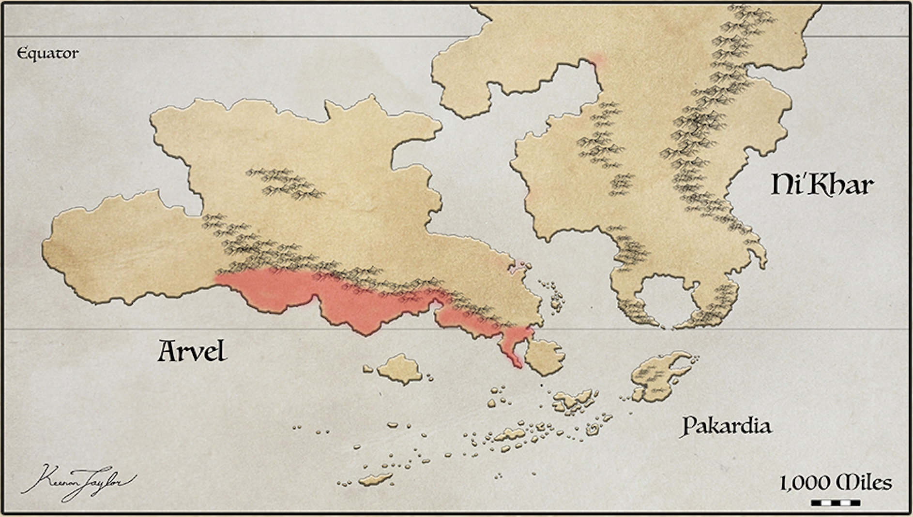
The Arvelith steppes constitute one of the largest continuous grassland systems in the Known World and form the ecological foundation of the southern rainshadow of the Arvelith Highlands. Stretching for thousands of miles along the southern and western face of the Arvelith Highlands, the region occupies a vast foreland belt extending from the western interior toward the southeastern margins of the continent. Although often described simply as a steppe, this characterization obscures the extraordinary complexity of the biome.
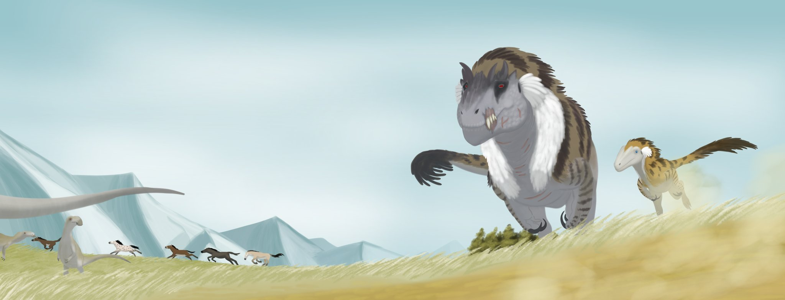
In reality, the Arvelith steppes represent a continent-scale ecological mosaic composed of open grasslands, pine savannas, riparian forests, spring-fed wetlands, rocky uplands, alluvial plains, and montane foothill environments, all interconnected through a shared hydrological and climatic framework. The steppes occupy a critical transitional zone between the humid tropical ecosystems of northern Arvel and the deserts of the western interior. Their existence is fundamentally tied to the presence of the Arvelith Highlands, whose immense mass modifies atmospheric circulation, redirects moisture transport, and generates the rain-shadow conditions that define much of southern Arvel. Yet unlike many terrestrial rain-shadow systems, the Arvelith Steppes are not characterized by ecological impoverishment. Instead, abundant meltwater, perennial springs, and extensive groundwater reserves compensate for limited rainfall, allowing the development of one of Kaimere's most productive grazing ecosystems. The result is a landscape governed less by precipitation than by hydrology. Rivers descending from the highlands function as ecological arteries, sustaining immense herbivore populations, supporting rich riparian habitats, and creating corridors of productivity that extend across otherwise semi-arid terrain. These waterways link distant ecological communities and provide the foundation upon which both biological and cultural systems are built.
The steppes are therefore best understood not as a singular habitat but as a vast environmental network whose structure emerges from the interaction of tectonics, climate, water movement, vegetation dynamics, and biological adaptation. Every aspect of the ecosystem, from the distribution of grasses to the migrations of animals and the settlement patterns of people, reflects the influence of these interconnected processes.
02 · History on Kaimere
Geological History and Continental Context
The origins of the Arvelith Steppes are inseparable from the geological history of Arvel itself. The modern landscape is the product of tens of millions of years of continental movement, mountain building, erosion, and sediment accumulation, all operating within the broader tectonic evolution of the Arvelith Plate. Arvel was once joined to both Pakardia and Kaishel as part of a southern supercontinental complex during the latter stages of the First Dynasty.
At this time, environments that now lie separated by vast oceans existed as continuous ecological corridors. Subsequent continental fragmentation initiated a prolonged period of northward drift, during which Arvel gradually rotated approximately ninety degrees while migrating toward Ni'Khar. This migration profoundly altered the continent's climate and topography. Compression along the eastern margin contributed to the uplift of the Arvelith Highlands, creating a mountain chain that today extends across much of the continent's length. Simultaneously, the immense weight of the rising mountains induced flexural subsidence within the adjacent southern crust.
The Arvelith Highlands constitute the dominant topographic feature of the continent. Reaching elevations of approximately 6 — 7 kilometres across substantial portions of the range, the highlands form a major physical barrier between the northern and eastern regions and the southern and western interior. Mountains of this scale influence the surrounding landscape through several processes. Orographic uplift increases precipitation on windward slopes, while high elevations generate cooler conditions and substantial vertical differences in temperature and moisture availability. Precipitation and snow accumulation at the highest elevations, where climatic conditions permit, may contribute to headwater formation and seasonal variation in downstream river discharge. The highlands also influence biological distributions by restricting dispersal between adjacent lowland regions. Mountain passes, valleys, and foothill corridors may provide routes for movement, whereas high ridges and exposed alpine environments can limit the distribution of organisms adapted to warmer lowland habitats. Over geological timescales, such barriers can promote population isolation and regional diversification. The precise tectonic origin of the Arvelith Highlands remains dependent on a more detailed reconstruction of Arvel's geological history. Their present-day effects on climate, hydrology, and biogeography, however, are evident from their geographical position and elevation.
Over millions of years this process produced a broad foreland basin stretching along the southern face of the range. The modern steppes occupy this ancient foreland. As erosion progressively stripped material from the growing highlands, vast quantities of sediment were transported southward and deposited across the basin. Rivers emerging from the mountains constructed immense alluvial fans and floodplains, gradually infilling the depression with layers of gravel, sand, silt, and clay. Aeolian deposition further modified the landscape, particularly during drier climatic intervals when exposed floodplains and desert margins supplied abundant windborne sediments.
Today, much of the region rests upon sedimentary sequences thousands of feet thick. Beneath these deposits lie older metamorphic and igneous rocks derived from the continental core of Arvel. The interaction between these ancient bedrock formations and younger sedimentary accumulations continues to influence groundwater flow, soil chemistry, and spring formation throughout the steppe system. Geologically, the Arvelith steppes remain an active foreland environment. Erosion of the highlands continues to supply sediment to the plains, rivers continue to shift course and construct new floodplains, and tectonic adjustments associated with the gradual closure of the Trakaiam Basin continue to reshape regional topography. Although these processes operate on timescales beyond human perception, they form the foundation upon which every ecological and cultural feature of the region ultimately depends.
03 · Landscape
Geography and Habitat Structure
Although frequently depicted as a uniform grassland, the Arvelith Steppes consist of several distinct physiographic provinces that collectively form one of the most structurally diverse open environments on Kaimere.
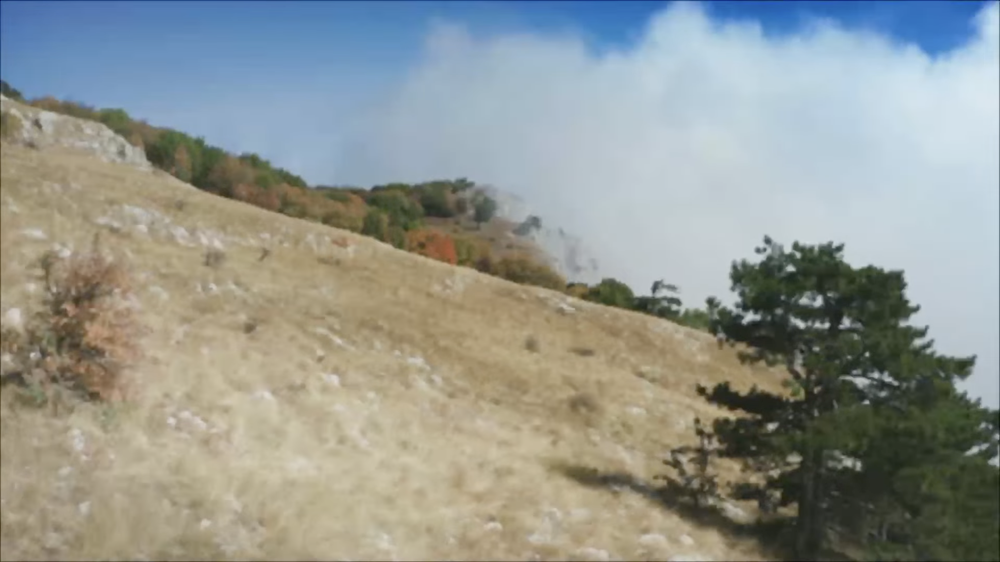
The northern margin is dominated by the Highland Piedmont, a broad transition zone where mountain slopes gradually give way to rolling foothills and alluvial fans. Here, rocky outcrops, seasonal streams, and scattered woodlands create a heterogeneous landscape that supports high biodiversity and serves as an important interface between montane and lowland ecosystems.
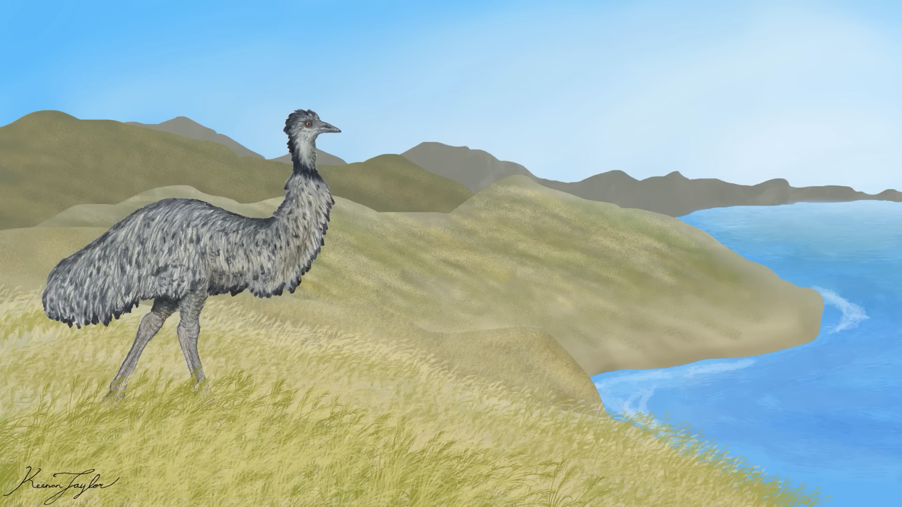
Southward, the terrain opens into the core grassland belt, the defining feature of the region. This vast expanse consists of gently rolling plains dominated by perennial grasses and herbaceous vegetation. The grassland matrix forms the primary habitat for many of the steppe's largest herbivores and constitutes the ecological heart of the system.
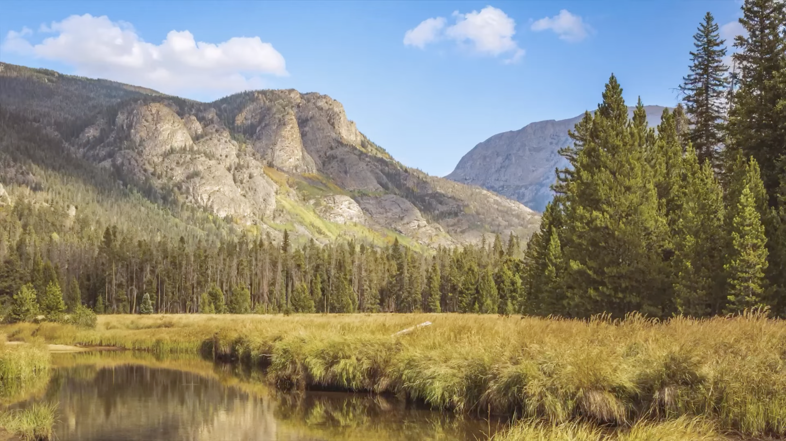
Embedded within this matrix are extensive riparian corridors, linear belts of forest and wetland associated with rivers, springs, and floodplains. These corridors represent centers of biological productivity and provide critical refuge during droughts and seasonal resource shortages.
Scattered throughout the plains are upland ridges and pine savannas, areas where shallow soils and exposed bedrock limit grass growth and favor the establishment of drought-tolerant conifers. These elevated habitats create important topographic diversity and serve as refuges for numerous specialized species.
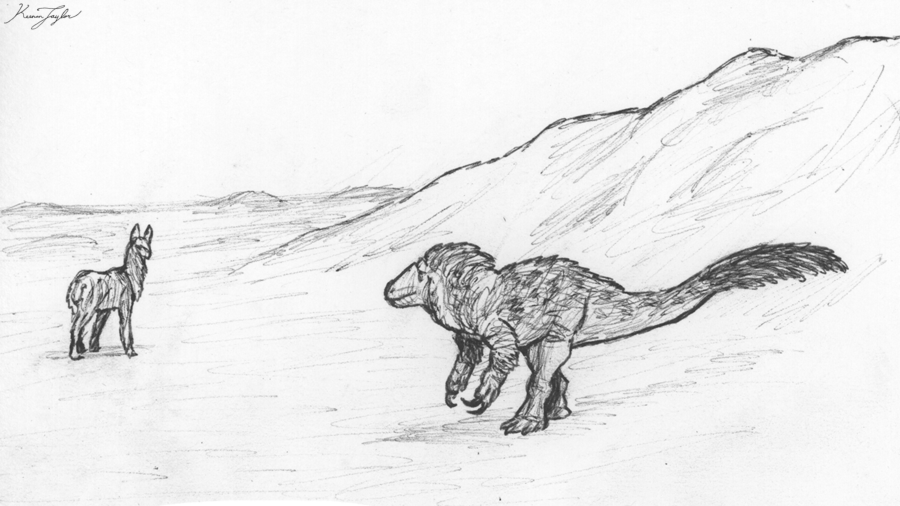
Toward the western margins, increasing aridity produces a gradual transition into the desert-steppe interface, where grasslands become increasingly fragmented and conditions begin to resemble those of the adjacent western deserts of the Timugai Badlands. Isolated pine forests dot the western area, that has since become a somewhat refuge for some animals there.
Beneath the visible vegetation lies one of the most important yet least conspicuous components of the Arvelith steppe ecosystem: its soils. The region's soils represent the cumulative product of mountain erosion, river transport, aeolian deposition, biological activity, and climatic fluctuation operating over millions of years. In many areas they are exceptionally deep and rich in mineral nutrients derived from the weathering of highland bedrock.
A defining feature of these soils is the widespread development of biological crust communities composed of fungi, lichens, microorganisms, and native magical symbionts. These crusts bind surface sediments together, reduce erosion, enhance nutrient cycling, and regulate moisture infiltration. Their ecological importance cannot be overstated. The remarkable stability and resilience of the Arvelith steppes are due in large part to these living soil systems, which act as a biological foundation underlying the entire grassland ecosystem.
Together, geology, climate, hydrology, and soils create the environmental framework upon which all subsequent ecological and cultural developments emerge. Before discussing vegetation, fauna, migration systems, or human societies, it is this physical landscape that must first be understood, for every living thing in the Arvelith steppes ultimately derives its character from the ancient processes that shaped the land itself.
04 · The Impact of Weather
Atmospheric Circulation and Orographic Precipitation
The climate of the Arvelith Steppes is governed by its position near thirty degrees south latitude and by the overwhelming influence of the Arvelith Highlands. At this latitude, the region lies near the descending limb of the Hadley circulation system. Air that rises in equatorial regions eventually descends within the subtropics, producing persistent zones of high atmospheric pressure characterized by stable conditions, low humidity, and limited cloud formation. The steppes occupy the center of one such subtropical high-pressure belt. Descending air masses suppress convection and inhibit large-scale precipitation development.
As a result, much of the region experiences clear skies, intense solar heating, and pronounced diurnal temperature variation. Daytime temperatures may become extremely high beneath unobstructed sunlight, while nighttime cooling can be rapid due to low atmospheric moisture. Unlike many grassland systems on Earth, the region experiences relatively weak prevailing winds. Surface air movement is often inconsistent and localized, producing long periods of atmospheric stagnation that have inspired the traditional term "Dead Winds" among local cultures.
The Arvelith Highlands intensify these conditions through powerful rain-shadow effects. Moisture-laden air arriving from the Trakaiam Sea is forced upward along the northern slopes of the mountain range. As the air rises, it cools adiabatically and releases much of its moisture as precipitation across northern Arvel. By the time these air masses cross the mountain crest and descend into the southern foreland, they have lost the majority of their water content. The descending air subsequently warms and dries further, creating conditions unfavorable for widespread rainfall. Only weakened remnants of tropical systems occasionally penetrate the barrier. These storms can produce localized precipitation events, but they rarely generate the sustained rainfall characteristic of the northern and eastern side of the continent.
05 · The Impact of Weather
Hydrology and River Systems
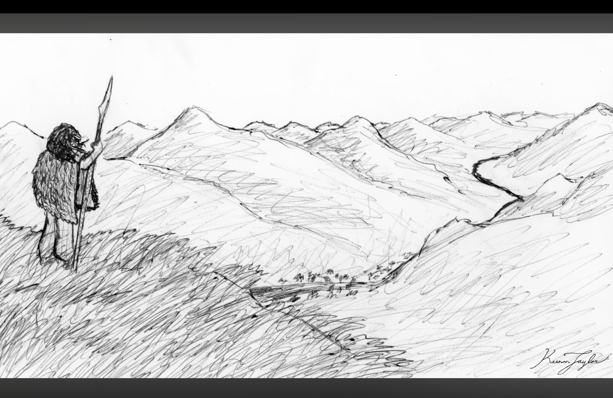
If the atmosphere imposes ecological constraints upon the steppes, water movement through the landscape provides the mechanisms by which those constraints are overcome. The hydrological network of the Arvelith steppes is among the most important environmental systems in the Known World.
Virtually all large rivers originate within the Arvelith Highlands, where snowfall, glacial ice, mountain precipitation, and groundwater recharge combine to generate reliable water supplies. These rivers descend through the foothills and spread across the plains in branching networks that transport both water and nutrients over enormous distances. Unlike precipitation, which is highly variable from year to year, river discharge remains comparatively stable due to the buffering influence of mountain snowpack, glacial reserves, and deep groundwater systems. This stability creates a foundation upon which entire ecosystems depend. Many rivers occupy broad valleys bordered by terraces, oxbow lakes, and seasonally flooded meadows.
Over time, channel migration has created extensive floodplain complexes that serve as nutrient reservoirs and centers of primary productivity. Groundwater further enhances regional resilience. Water stored within deep sedimentary deposits and fractured bedrock emerges through countless springs, seeps, and artesian systems scattered throughout the landscape. These features often support isolated pockets of vegetation and wildlife far from major rivers.
Collectively, rivers and groundwater systems create a network of ecological corridors that link disparate habitats across the steppe. They facilitate migration, sustain biodiversity during droughts, and provide the primary source of water for both wildlife and human populations. Without these hydrological systems, the Arvelith Steppes would likely resemble the deserts farther west. Their continued existence as a highly productive biome is fundamentally dependent upon water imported from the mountains.
05 · Flora of the Steppes
Vegetation and Primary Productivity
The Arvelith steppes derive much of their botanical character from one of the largest and most successful floral introductions in the history of Kaimere. During the Northern Eurasian Harvest enormous quantities of plant propagules originating from the temperate and subarctic ecosystems of northern Eurasia were introduced through the Portal and subsequently dispersed across southern Arvel. These introductions included grasses, sedges, rushes, pines, birches, alders, hawthorns, willows, herbaceous perennials, and countless associated fungi, microbes, and invertebrate symbionts. Although many lineages failed to establish themselves outside localized refugia, those adapted to seasonal climates, grazing pressure, nutrient-poor soils, and climatic variability found conditions within southern Arvel remarkably favorable. Over hundreds of thousands of years these Eurasian-derived communities underwent extensive ecological reorganization, adapting to Kaimere's greenhouse climate, unique hydrological systems, and intense herbivore pressures. The modern vegetation of the Arvelith steppes therefore cannot be viewed as a simple Eurasian transplant. Instead, it represents a highly modified descendant ecosystem whose ancestral roots remain recognizable while its modern structure has become distinctly Kaimeran. At the broadest scale, vegetation throughout the steppes is organized around a hierarchy of water availability. Differences in groundwater depth, seasonal flooding, soil texture, and proximity to rivers create a mosaic of habitats that vary dramatically in productivity despite often occurring only a few miles apart. Consequently, vegetation patterns are governed less by rainfall alone and more by access to reliable water sources and the movement of nutrients across the landscape. The dominant vegetation consists of extensive perennial grasslands composed primarily of cool-season grasses descended from Eurasian steppe, forest-steppe, and boreal meadow communities. These grasses form dense root mats that often penetrate several meters into the soil profile. Below ground, root biomass frequently exceeds aboveground biomass by an order of magnitude. The majority of the ecosystem's carbon storage, nutrient cycling, and drought resistance is therefore concentrated beneath the surface rather than above it. Many dominant species possess high silica concentrations within their tissues, a characteristic inherited from their Eurasian ancestors and further intensified through prolonged coevolution with Kaimere's unusually diverse grazing guilds. The resulting vegetation is both highly nutritious and mechanically resilient. Heavy grazing often stimulates additional growth rather than suppressing it, allowing the grasslands to recover rapidly following herbivore migrations. Unlike many grassland systems on Earth, productivity within the Arvelith Steppes is not concentrated exclusively during a single growing season. The climate of Kaimere permits a prolonged period of biological activity, with growth occurring whenever sufficient moisture becomes available. Consequently, productivity often manifests in pulses rather than predictable annual cycles. A single rainfall event or seasonal flood may trigger explosive growth across vast areas, transforming dormant plains into dense expanses of vegetation within weeks. Interspersed among the dominant grasses are thousands of species of herbaceous flowering plants, collectively forming one of the most diverse forb communities on the planet. Many descend from plants originally native to the mammoth steppes, forest-steppes, and boreal meadows of northern Eurasia. During favorable years, enormous blooms of asters, sage relatives, lilies, gentians, campions, buttercups, and countless endemic descendants spread across the grasslands. These flowering events support immense populations of pollinating insects and play a central role in the reproductive ecology of many steppe organisms. Particularly important are the ephemeral communities that emerge following rare precipitation events. Seeds may remain dormant for years before conditions become favorable. Following rainfall, entire landscapes can rapidly transform as dormant annuals germinate simultaneously. These ephemeral blooms produce vast quantities of seeds and nectar before disappearing again into the soil seed bank, creating brief periods of extraordinary productivity that ripple throughout the food web. The physiognomy of the grassland itself varies considerably across the region. In areas with shallow soils and limited moisture, short-grass communities dominate. These habitats are characterized by low, tightly packed vegetation adapted to frequent grazing and drought. On deeper soils with greater groundwater access, taller bunchgrasses become increasingly common, forming dense stands that may exceed the height of a human. Along seasonally flooded basins and drainage channels, sedges and moisture-loving grasses create meadow complexes that remain green long after surrounding areas have dried. This subsequent dominance of angiosperm plants, especially grasses, are the primary reason that mammals have a much more diverse herbivore population in this region, while herbivores dinosaurs are subsequently more uncommon, and only remain to having adapted to foraging on these plants.
The foothills of the Arvelith Highlands support extensive open woodlands that represent the transitional zone between mountain and grassland ecosystems. Here, Eurasian conifers have become one of the defining structural elements of the landscape. Pines dominate many ridges and rocky slopes, forming open forests with sparse understories of grasses, shrubs, and drought-tolerant herbs. These woodlands occur where shallow soils, exposed bedrock, and reduced competition prevent the establishment of denser vegetation. Unlike the closed conifer forests of northern Eurasia, Arvelith pine woodlands are generally open in structure. Individual trees may be widely spaced, creating a savanna-like appearance that allows sunlight to penetrate to the ground. These habitats serve as thermal refugia during periods of extreme heat, provide nesting sites for numerous birds, and create important shelter for both predators and herbivores. Their seeds, needles, bark, and associated fungi contribute substantially to regional food webs. The ecological importance of pines extends beyond their direct productivity. Their root systems stabilize rocky slopes, reduce erosion, and facilitate the accumulation of organic matter in otherwise marginal environments. Many steppe animals rely upon pine woodlands during critical portions of their life cycles, making these forests disproportionately important relative to their overall area.
The most productive terrestrial habitats within the region are the steppewood forests associated with rivers and major waterways. Unlike the more open forests, the steppe woods are closed forests much like those on Earth. These forests occupy only a small fraction of the total landscape yet account for an enormous proportion of regional biomass production. The ancestry of these forests can be traced directly to the riparian woodlands and boreal river systems of northern Eurasia. Birch, alder, hawthorn, willow, maple, and pine descendants dominate their canopies, while dense understories support shrubs, vines, grasses, and herbaceous communities rarely found elsewhere on the steppes. The availability of permanent water allows these forests to maintain continuous productivity even during prolonged droughts. Structurally, steppewoods often form narrow ribbons extending for hundreds of miles along river valleys. Their canopies create cooler, more humid microclimates that contrast sharply with surrounding grasslands. Fallen leaves and woody debris accumulate within these corridors, generating fertile soils rich in organic matter and supporting complex decomposer communities. Ecologically, steppewoods function as biodiversity reservoirs. Countless species depend upon them for food, shelter, nesting sites, or seasonal refuge. During drought years, animal populations frequently concentrate along these waterways, making them critical centers of ecological stability. Beyond rivers, isolated spring-fed groves occur throughout the steppes wherever groundwater reaches the surface. These oases often support vegetation entirely different from that of surrounding grasslands. Small stands of birch, willow, hawthorn, and moisture-loving shrubs may persist for centuries around a single spring, creating islands of productivity scattered across otherwise open terrain. Underlying all of these plant communities is an exceptionally important but often overlooked component of the ecosystem: the biological soil crust.
The soils of the Arvelith Steppes are bound together by extensive networks of lichens, fungi, cyanobacteria, microbial consortia, and native magical organisms. These living crusts occupy nearly every undisturbed surface, forming a biological skin that stabilizes sediment and regulates ecological processes. The crusts perform numerous functions essential to ecosystem stability. They reduce erosion by binding soil particles together, enhance nitrogen fixation, increase water infiltration, regulate evaporation rates, and facilitate nutrient exchange between plants and microorganisms. Their presence dramatically improves the ability of vegetation to withstand drought and recover following disturbance. Native magic appear to play a particularly important role within these systems. By integrating into fungal networks and microbial communities, they contribute to the movement of nutrients and water across the landscape in ways not fully understood by modern science. Although their exact mechanisms remain under investigation, Assembly ecologists generally regard these magical soil communities as one of the primary reasons the Arvelith steppes can maintain such extraordinary productivity despite relatively modest precipitation.
06 · Plant Eaters of the Steppes
Herbivore Community
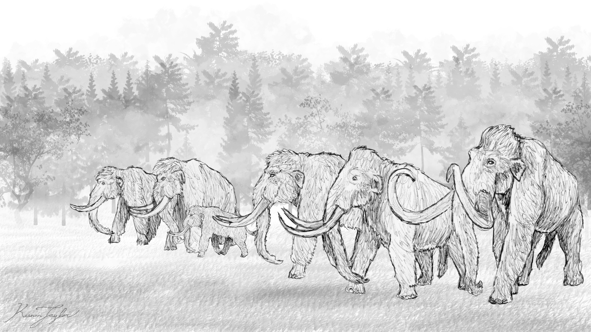
The southern temperate belt of Arvel supports one of the most complex large-herbivore assemblages anywhere in the Known World. Stretching from the cool maritime lowlands of western Arvel through vast steppewood mosaics, upland forests, alpine plateaus, and the windswept southern mountain chains, this region contains an extraordinary concentration of megafauna. Unlike many ecosystems where a handful of dominant grazers monopolize primary productivity, southern Arvel supports numerous large herbivores descended from entirely different evolutionary lineages. Proboscideans, rhinoceroses, toxodonts, bovids, cervids, horses, suids, ratites, marsupials, and even large herbivorous dinosaurs coexist across the same broad geographic region. Their coexistence is made possible through extensive ecological partitioning. Every major herbivore species occupies a slightly different position within the ecosystem, feeding at different heights, selecting different plant species, utilizing different habitats, moving across landscapes in different ways, or exploiting resources during different seasons. Competition certainly exists, but it is moderated by millions of years of coevolution. The result is an ecosystem whose structure resembles a blend of Pleistocene Eurasia, prehistoric South America, and Mesozoic dinosaur communities while remaining uniquely Kaimeran.
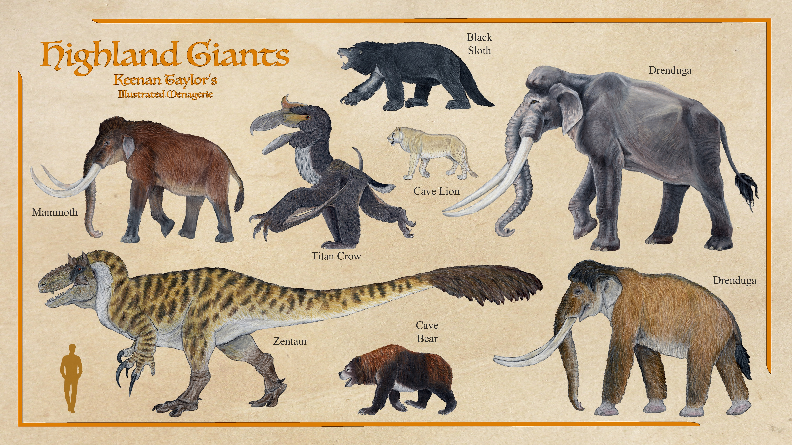
The largest consumers of plant biomass are the proboscideans. The bosuga is among the dominant herbivores of the open southern grasslands. Adapted primarily for grazing, these mammoths consume enormous quantities of grasses, sedges, and low-growing steppe vegetation. Their broad distribution places them throughout much of the temperate lowlands where they form large matriarchal herds capable of numbering dozens or even hundreds of individuals during seasonal migrations. Although superficially similar to the drenduga, the two giant proboscideans divide resources surprisingly effectively. Bosuga preferentially occupy open grasslands, rolling steppewood clearings, and colder upland meadows. Their grazing behavior often keeps vegetation cropped short, maintaining expansive grazing lawns that subsequently attract numerous secondary herbivores. The drenduga occupies a different ecological role. While fully capable of grazing, it functions primarily as a mixed feeder and browser. Individuals feed extensively on branches, leaves, bark, shrubs, and woody vegetation inaccessible to most other herbivores. Mature bulls often stand within forest margins and riparian woodlands where their trunks allow exploitation of resources several meters above ground level. This separation reduces direct competition between the two giants. Bosuga dominate open grass production while drenduga focus more heavily on woody vegetation and transitional habitats. Yet their relationship remains deeply interconnected. Bosuga herds often move through grasslands previously disturbed by drenduga. Trees pushed over by drenduga create localized clearings that rapidly become colonized by grasses favored by mammoths. Conversely, mammoth grazing suppresses woody encroachment, helping maintain the open habitats favored by drenduga during seasonal movements. Together these two species function as the primary landscape engineers of southern Arvel.
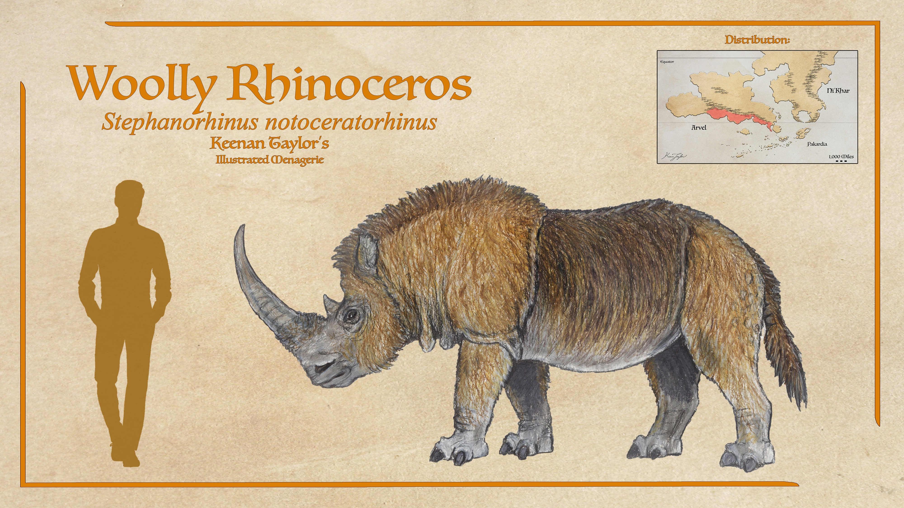
Beneath the giants exist another tier of massive herbivores represented by the woolly rhinoceros and woolly beraphaunt. The woolly rhinoceros occupies open and semi-open environments where it specializes on coarse grasses, sedges, reeds, and tough herbaceous plants. Its powerful head and enormous horn allow it to clear snow, uproot vegetation, and access food unavailable to many competitors. Although often grouped with mammoths as a grazer, the woolly rhinoceros exploits a distinct feeding niche. Where bosuga seek productive grasslands, rhinoceroses frequently target rougher vegetation and poorer-quality forage. They often thrive in areas where mammoths are less abundant, including windswept uplands, rocky valleys, and shrubby grasslands. This difference reduces direct dietary overlap.
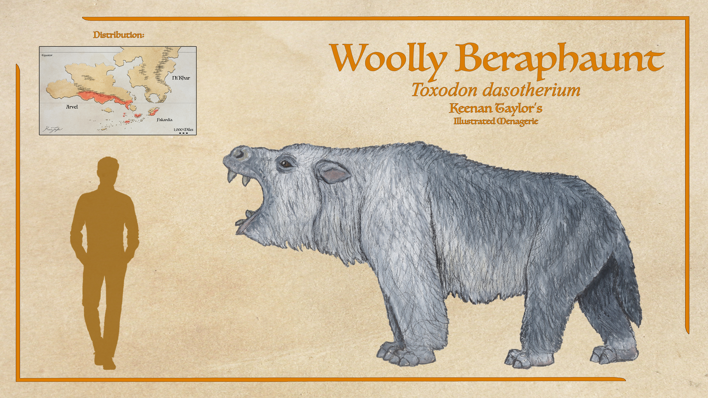
The woolly beraphaunt occupies yet another position. Unlike the true grazing specialists, the beraphaunt is a generalized bulk feeder. It consumes grasses, shrubs, leaves, fruits, bark, aquatic plants, and virtually any digestible vegetation available. Its broad muzzle and enormous digestive system allow processing of lower-quality foods that many competitors ignore. Beraphaunts commonly feed within ecotonal habitats where forests, shrublands, and grasslands intersect. Their foraging behavior frequently overlaps with both rhinoceroses and mammoths, but their dietary flexibility allows them to shift resources as conditions change. Interactions among these species can be surprisingly complex. Rhinoceroses often create short-grazed patches attractive to beraphaunts. Beraphaunts subsequently browse regenerating shrubs within those same patches. Mammoths may then utilize the resulting grass growth. Thus a single area can sequentially support multiple large herbivores despite apparent dietary overlap.
Southern Arvel possesses one of the richest bovid assemblages in Kaimere. The giant bison serves as one of the dominant grazers of cooler grasslands. Towering shoulder humps support immense musculature used during intraspecific combat and snow clearing. These animals specialize on grasses and sedges and often form large herds across open country. The Arvelith aurochs occupies a somewhat different niche. While capable grazers, aurochs function more as mixed feeders. They regularly consume shrubs, broadleaf herbs, young tree shoots, and seasonal fruits. Consequently they spend considerably more time near woodland edges than giant bison. This distinction allows both species to coexist throughout much of their overlapping range. Aurochs frequently utilize areas abandoned by bison. Following intensive grazing, woody plants often regenerate. These regenerating communities attract aurochs, which exploit browse resources ignored by bison. The greater chrysomallos occupies yet another ecological position. Living primarily in upland regions and mountain foothills, these large shaggy takins specialize on steep terrain and colder climates. Their diet includes alpine grasses, shrubs, lichens, mosses, and hardy mountain vegetation. Competition between chrysomallos and giant bison remains limited because their preferred habitats differ dramatically. Where overlap occurs, chrysomallos typically exploit rough terrain avoided by the larger grazers. The interactions among these bovids create a shifting mosaic across southern Arvel. Bison dominate open lowland grasslands. Aurochs concentrate in mixed habitats. Chrysomallos occupy uplands and mountains. Together they ensure that nearly every terrestrial habitat supports large grazing pressure.
The large highland monkey specialize in short grasses and underground plant parts in upland and rocky zones where the greater chrysomallos inhabits. The reaper sloth deserves special attention because it occupies one of the most unusual positions within the entire Southern Arvel herbivore community. Despite its fearsome appearance, immense claws, and intimidating size, the reaper sloth occupies a primarily herbivorous niche and represents one of the dominant megaherbivores of the southern uplands and cool temperate forests. In many respects it fills ecological roles that on Earth would be divided among browsing bears, giant ground sloths, and high-browsing ungulates. It is simultaneously one of the strangest and most influential consumers in the entire ecosystem. The species is particularly important within montane forests and upland woodlands where other megaherbivores become less abundant. In such environments the reaper sloth may be the principal agent controlling forest structure. Areas lacking sloths rapidly become denser and less diverse, demonstrating the animal's role as a keystone browser. Competition between reaper sloths and other large herbivores is surprisingly limited because of dietary partitioning. Woolly beraphaunts, giant bison, aurochs, wild sinmar, and woolly rhinoceroses focus heavily on ground-level vegetation. Drenduga and bosuga consume large quantities of grasses, shrubs, and low browse. Moose, rose elk, and caribou occupy intermediate browsing heights. Reaper Sloths alone specialize in actively pulling vegetation downward from the canopy. Their feeding strategy therefore accesses resources that would otherwise remain unavailable. The cervid guild structure displays perhaps the clearest example of resource partitioning.
The Arvelith moose is the largest cervid browser within the region. Like its Earth counterpart, it specializes on woody vegetation. Aquatic plants, willow-like shrubs, riparian vegetation, young trees, and wetland browse form the majority of its diet. Moose spend extensive periods in marshes, bogs, lakeshores, and river valleys where their long legs permit access to habitats difficult for many competitors to utilize. Being Cervalces, its not as specialized as moose on Earth, but they still undertake aquatic foraging from time-to-time. The rose elk occupies a markedly different niche. Rather than focusing exclusively on browse, rose elk function as mixed feeders. Their immense antlers are among the largest displayed by any cervid, reflecting strong sexual selection. Rose elk frequently inhabit open forests, woodland-steppe transitions, and meadow systems. They consume grasses more readily than moose while still exploiting browse resources unavailable to bovids. The caribou represents the most mobile cervid in the ecosystem. Seasonal migrations allow exploitation of dispersed resources across enormous geographic areas. Caribou feed heavily on lichens, sedges, grasses, dwarf shrubs, and tundra-like vegetation. Their migratory behavior creates ecological interactions extending far beyond their immediate feeding habits. Large predators often track caribou migrations. Scavengers depend upon seasonal mortality. Nutrients carried across hundreds of kilometers are redistributed through dung and carcasses. Even plant communities respond to the recurring pulses of grazing pressure. Cervalces is however the major success of cervids from of Kaimere. Cervalces has feet adapted for uneven terrain. They aren't as cursorial as other deer, but much more surefooted, which has allowed them to propagate numerous different types of terrains. In the steppes of Arvel, the red stag holds a presence, often growing between 240 — 500 kilograms. The red stag is a large species of Cervavitus found throughout much of the temperate Known World. They are mixed feeders that favor grass. They are comfortable swimmers, allowing them to pass through the many small islands and enabling them to grow much larger than a landlocked island species would be. This has allowed for their expansion into Qajar from the southern Arvelith steppes and into the Free-States. The four cervids therefore divide resources according to habitat and feeding strategy.
The wild sinmar fills a role somewhat analogous to horses and zebras of Earth. Fast-moving, highly social, and specialized for efficient grazing, sinmar herds roam open grasslands and steppewood habitats. Their digestive systems process forage differently from ruminants, allowing rapid intake of large quantities of relatively low-quality vegetation. This difference significantly reduces direct competition with bovids. Bison, aurochs, and chrysomallos depend upon rumination and often select more nutritious forage. Sinmar can exploit coarser grasses and rapidly move between feeding areas. In many regions sinmar act as ecological pioneers. Freshly disturbed habitats created by mammoths, elephants, fire, or seasonal flooding are often colonized first by grasses. Sinmar quickly exploit these early successional communities before bovids arrive in significant numbers. Their grazing behavior frequently facilitates subsequent use by other herbivores. The other horse found in these southern steppes is the much less abundant sinjara, or Arvelith wild ass. Despite this name, it is a stenonine horse like the Ni'Khari airos. Likely from a lineage closer to asses and zebras than true horses, but branched off before the other two split, so is neither zebra nor ass. They are strict grazers. Sinjara are highly aggressive animals. Like the sinmar they live in herds, though their herds are smaller, rarely more than ten mares and usually closer to five and only a single stallion guards the herd. According to the Arvelith peoples, domesticating the sinjara is out of the question, as they are not only too aggressive to be penned together, they attack other livestock and their keepers. Also, they are too small to confidently ride and are less flexible in their diet compared to the sinmar, further reducing their utility. As there's really no reason to keep them that isn't better suited by the already domesticated sinmar, sinjara are only regarded by the Arvelith people as a source of food. As a game animal they are quite well regarded, with hunts of the wild ass being a favored pastime among the nobility.
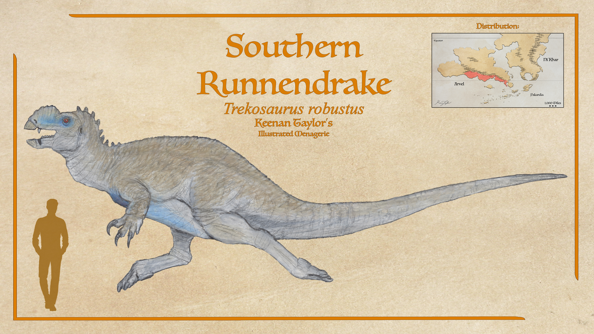
Among the most unusual members of the herbivore community is the southern runnendrake. These medium-to-large multi-ton elasmarians that occupy ecological roles that overlap partially with ungulates but remain distinct enough to avoid exclusion. Runnendrakes primarily consume low shrubs, broadleaf vegetation, young shoots, and seasonal herbaceous growth. Their beaked jaws permit selective feeding, allowing exploitation of plant resources ignored by grazing mammals. Juveniles occupy somewhat different niches than adults. Young runnendrakes often focus on tender vegetation within dense cover, reducing competition with adults. As they mature, they gradually expand into more open habitats and broader diets. The species also interacts extensively with large grazers. Areas disturbed by mammoths and rhinoceroses often generate flushes of fresh vegetation favored by runnendrakes. Conversely, runnendrake browsing suppresses shrub encroachment, indirectly benefiting grazing mammals. Thus the dinosaur contributes to vegetation management in ways broadly comparable to medium-sized browsing ungulates.
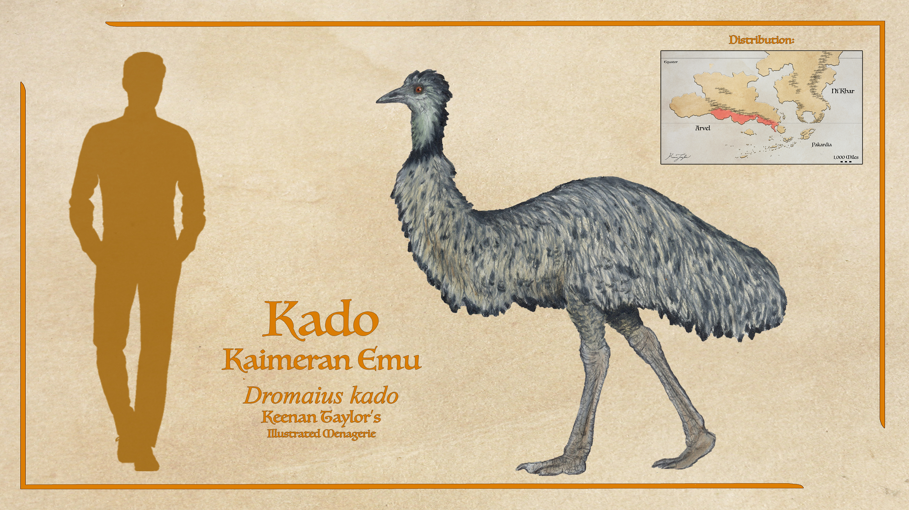
The kado or Kaimeran emu, occupies a unique position within the herbivore guild. Unlike most large herbivores, kado are highly opportunistic feeders. Seeds, fruits, shoots, flowers, leaves, fungi, and numerous invertebrates contribute to their diet. Because they are not strict grazers or browsers, they experience relatively little direct competition with larger herbivores. Instead, kado frequently benefit from the activities of other species. They function as important seed dispersers throughout southern Arvel, transporting plant propagules across considerable distances and linking habitats that might otherwise remain isolated.
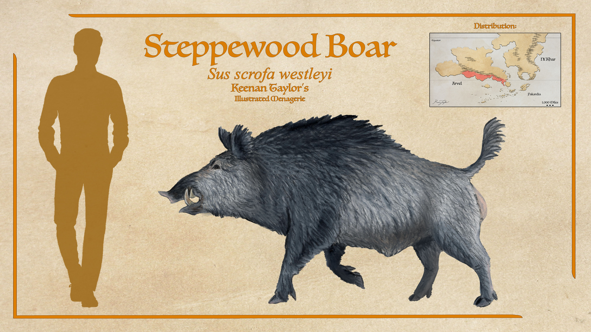
The steppewood boar represents one of the most influential medium-sized herbivores in the ecosystem. Though technically omnivorous, plant material constitutes much of its annual intake. Roots, tubers, bulbs, fruits, seeds, and underground storage organs are heavily utilized. Their rooting behavior profoundly alters vegetation structure. Boars excavate soil patches that create germination opportunities for numerous plant species. These disturbed patches are frequently colonized by pioneer vegetation subsequently utilized by runnendrakes, kado, sinmar, and juvenile bovids. The boar therefore acts as a small-scale ecosystem engineer. Its interactions with larger herbivores are primarily indirect, mediated through habitat modification rather than direct competition. The marsupials of southern Arvel occupy niches largely beneath the scale of the great ungulates.
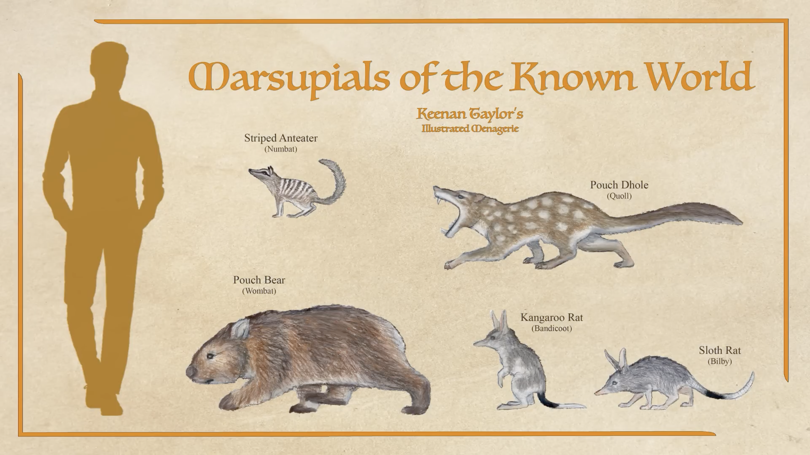
Pouch bears consume grasses, roots, bark, and various herbaceous plants while excavating extensive burrow systems. Their digging aerates soils and influences local hydrology. Kangaroo rats exploit seeds and low vegetation in open habitats. Sloth rats specialize on arid-zone browsing and foraging. These marsupials represent critical lower-level consumers that connect large-scale megafaunal processes with smaller ecological networks.
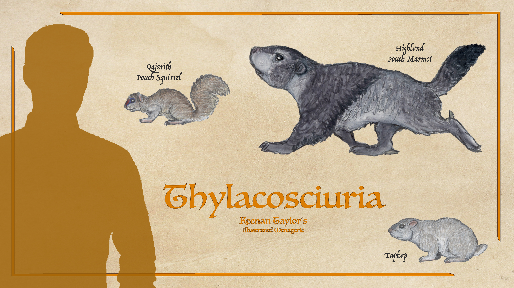
Perhaps the most characteristic small herbivores of Southern Arvel are the multituberculates. On Earth these remarkable mammals vanished millions of years before humanity evolved. On Kaimere they survived and diversified into one of the most successful herbivore radiations in the Known World. They occupy ecological roles filled by squirrels, marmots, rabbits, hyraxes, guinea pigs, and even small ungulates elsewhere. Unlike rodents, multituberculates possess highly specialized multi-cusped cheek teeth capable of processing fibrous plant material with remarkable efficiency. Many species can exploit coarse vegetation unsuitable for similarly sized mammals. Their persistence represents one of the most distinctive features of Kaimere's ecology. Southern Arvel hosts dozens of multituberculate species ranging from mouse-sized forms to animals approaching the mass of small deer. Most occupy niches below the attention of travelers, yet collectively they represent one of the largest herbivore biomasses in the region. Steppe-dwelling multituberculates dominate open grasslands between the territories of giant bison and woolly rhinoceroses. These animals clip grasses close to the ground, creating heavily grazed patches that influence plant succession and generate habitat for numerous insects. Their burrowing systems aerate soil and increase water infiltration during seasonal rains. Forest multituberculates occupy shrub layers beneath the canopies frequented by rose elk and moose. Many are excellent climbers, feeding on buds, catkins, seeds, and young leaves. Their caching behavior disperses countless plant species across the landscape. Forgotten food stores often germinate into new shrubs and trees. Mountain forms inhabit rocky slopes shared with greater chrysomallos herds. These stocky species resemble a blend of marmot and wombat in appearance. Their powerful incisors and digging limbs allow them to excavate extensive tunnel systems that become refuges for many smaller animals. The ecological significance of multituberculates extends far beyond herbivory. Their burrows provide shelter for reptiles, amphibians, insects, and nesting birds. Numerous predators depend heavily upon them, including juvenile reaper sloths, pouch dholes, small raptors, and many snakes. The largest thylacosciurian is the lasuga. These giant marmot-like multituberculates often weigh several hundred pounds. At seven hundred pounds, big male lasuga are the second largest multituberculate in the known world. During the Anchored Period they could get even larger and more diverse, being an archetypical big herbivore of those steppes and valleys alongside mastodon, megathere sloths, elasmerians, and parankylosaurs, but the arrival of new grass and grazers specialized for them coupled with overhunting by hinterland giants appears to have driven most to extinction. The rare and restricted lasuga is the last of their lineage, and are very much a minority compared to the mammoths and ungulates now defining the landscape. Like their little cousins, they dig short burrows to keep warm and avoid predators. They feed on a wide range of pines: both needles, cones, and the bark. Rodents constitute another major component of the herbivore community.
Although multituberculates often dominate certain habitats, rodents remain extraordinarily abundant and occupy nearly every terrestrial ecosystem. They range from tiny seed-eaters inhabiting grasslands to beaver-like wetland engineers capable of transforming entire watersheds. Grassland rodents are particularly important within regions frequented by giant bison and caribou. Living in sprawling colonies, they harvest seeds and young shoots while creating networks of tunnels beneath grazing grounds. These burrow systems increase soil turnover and improve nutrient distribution. The grazing activities of large herbivores actually benefit many rodent populations. Bison and runnendrakes maintain open vegetation structures that improve predator detection and stimulate production of nutrient-rich regrowth preferred by smaller grazers. In turn, rodents influence the larger herbivores by modifying plant communities. Areas subjected to intensive rodent activity often exhibit different species compositions than adjacent ungrazed patches. Forest rodents specialize in seed consumption and dispersal. Many species preferentially collect nuts, fruits, and seeds produced by canopy trees. Their caching behavior serves as a critical mechanism of forest regeneration. Lagomorphs occupy a unique ecological position between rodents and larger grazing mammals. Southern Arvel supports numerous rabbit and hare species adapted to grasslands, shrublands, alpine meadows, and forest edges. Their high reproductive rates make them one of the most reliable prey resources in the ecosystem. Lagomorphs thrive particularly well in habitats shared with caribou, giant bison, woolly rhinoceroses, and southern runnendrakes. These large grazers create heterogeneous vegetation structures ideal for small browsing mammals. Recently grazed patches provide nutritious regrowth, while taller surrounding vegetation offers concealment from predators. Unlike many rodents, lagomorphs can rapidly exploit transient vegetation resources. Their mobility allows them to track seasonal changes across broad areas. During favorable years populations may expand explosively, carpeting entire valleys with feeding individuals. Such outbreaks have dramatic ecological consequences.
07 · Meat-Eaters of the Steppes
Carnivore Community
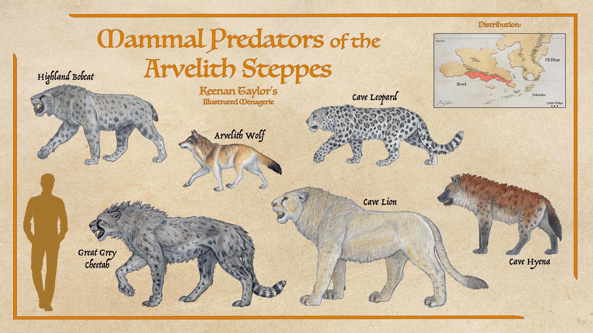
The Arvelith steppes possess one of the most formidable mammalian predator assemblages in the Known World. Stretching across cold grasslands, rolling upland steppes, broken escarpments, wooded valleys, alpine forests, and wind-carved plateaus south of the great mountain barrier, this ecosystem supports an astonishing diversity of carnivores. Unlike the Titan Gardens to the north, where gigantic theropods dominate virtually every trophic level, the highlands represent one of the few regions of Kaimere where mammalian predators achieved their greatest ecological success. Yet the term carnivore community can be misleading. The predators of the southern steppes are not arranged in a simple hierarchy with a single apex hunter sitting atop a pyramid. Rather, they form an extraordinarily complex web of competing specialists, opportunists, scavengers, aerial hunters, omnivorous giants, and migratory superpredators. Lions, hyenas, cheetahs, Homotherium, leopards, wolves, bear sloths, bears, eagles, vultures, and even immense flying pterosaurs all participate in the movement of energy through the ecosystem. Above them all loom the seasonal shadows of titan crows and wandering zentaur megaraptorans, creatures so enormous that they seem almost disconnected from the struggles of ordinary predators. At the lowest level of the carnivore hierarchy are numerous small hunters.
Lesser Predators of the Steppes
The larger officers do not account for the entire predatory community. Much of the smaller fauna is sustained by the abundance of insects, rodents, reptiles, nesting birds, and other small animals distributed across the steppes and their adjoining habitats. These predators do not generally compete directly with cave lions or hyenas, but their presence contributes to the overall complexity of the food web.
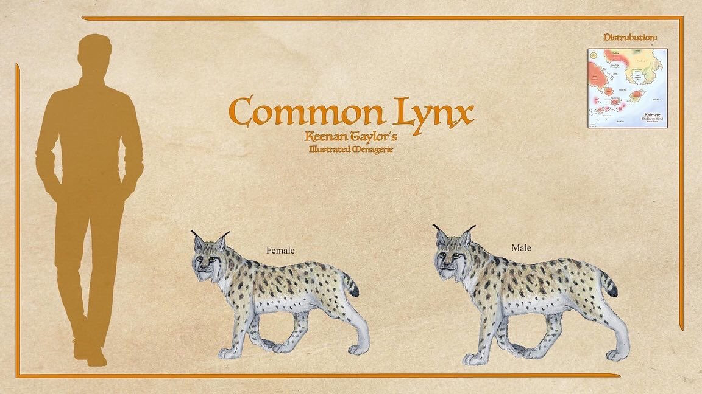
The common lynx occupies another relatively secure niche. Though significantly larger than the bobcats familiar to humans, it remains far smaller than the great predators dominating the steppes. Unlike Homotherium, cave leopards, or lions, lynx are almost entirely solitary. Their prey consists primarily of hares, rabbits, ground birds, young deer, rodents, and similar-sized animals. The species achieves coexistence through habitat partitioning. Most lynx spend far more time along woodland edges, brushlands, and broken terrain than the larger cats. While cave leopards may pass through these habitats, they generally focus on larger prey. Lynx also exhibit temporal partitioning. Activity peaks often occur during crepuscular periods when larger predators are less active. This minimizes encounters. The lynx therefore occupies a relatively stable position in the ecosystem. It is neither dominant nor heavily persecuted.
The pouch dhole is the principal mid-sized marsupial predator of the southern Arvelith highlands. Adults commonly weigh between three and eight kilograms, with some larger upland forms approaching ten kilograms. Its body is long and relatively low to the ground, with a flexible spine and well-developed hindlimbs that enable short pursuits and rapid changes of direction. The forelimbs are strong enough to grapple prey and excavate nests, while the elongated muzzle and powerful jaw muscles allow it to capture a broad range of small animals. Its diet includes reptiles, small mammals, nestlings, and insects. It occupies highland steppe, broken woodland, and forest mosaics, with small populations extending into the western deserts wherever prey remains abundant.
The southern fisher occupies the cooler and more strongly seasonal forests of southern Arvel and adjacent uplands. It is primarily a forest predator, although its range includes wooded areas connected to the steppe. Its summer coat resembles that of northern populations but is somewhat paler and more tawny. During winter, a dense underfur and long silver-tipped guard hairs produce a pale grey appearance, providing camouflage in snow-covered woodland. Broader paws assist movement over snow, while prey is frequently cached beneath snowbanks. Its winter diet includes a greater proportion of ground-dwelling mammals and overwintering dinosaur eggs, reflecting reduced access to arboreal prey.
Watson's marten is a particularly small and specialized arboreal predator of the southern Arvelith steppe forests. Its slender body allows it to move through narrow branch networks and cavities inaccessible to larger predators. The dark brown to nearly black coat provides camouflage beneath dense evergreen canopies, while its diet consists largely of rodents, climbing marsupials, insects, and nesting birds. It is a cautious predator that relies more heavily on concealment and stealth than intimidation.
The Arvelith ferret occupies cooler foothills and steppes south of the Arvelith Highlands. It is slightly smaller than the Crescent polecat but more robust, with heavier forelimbs and broad shoulders adapted for excavating compact soils. Its dark grey-brown coat has a distinctive frosted appearance due to the dense silver underfur. Rodents remain its principal prey, although rabbits constitute a larger proportion of its diet than in its Crescent relative. It frequently invades existing burrow systems rather than excavating new ones, and may cache surplus prey in underground chambers during autumn.
The Qajarith weasel occurs in Qajar, the neighboring Arvelith Steppes, and the Free States. Its slender body and tawny-brown coat allow it to move through dry grass and woodland litter, while its strong jaws enable it to kill prey considerably larger than itself. It is particularly notorious around settlements and agricultural enclosures, where it attacks fowl, rabbits, and small drakes. Its ability to enter small openings makes it difficult to exclude from livestock facilities, and its adaptability has made it a persistent nuisance to farmers.
Several other mustelids occupy the connected habitats of the southern steppes. The Qajarith mink is primarily associated with Qajar and nearby waterways, while the sea mink is distributed more widely throughout Kaimere's temperate regions. Sea mink are substantially larger, with males reaching approximately one metre in length and exceeding ten kilograms. Although not restricted to coasts, they occur along rivers and other productive aquatic habitats, where their hunting behavior can intersect with that of other riparian predators. The Qajarith mink can hybridize freely with sea mink in areas where their ranges meet.
The Arvelith badger is an omnivorous member of the wider carnivore community, although it is not a major predator of vertebrates. Descended from Eurasian badgers, it occupies the more temperate regions of southern Arvel. Its diet is unusually broad for a mustelid and may show a strong preference for tubers, with insects and carrion providing additional resources. It frequently shares burrows with other species and maintains separate latrines and refuse areas within its den systems. This behavior makes it an important consumer of subterranean plant and animal material, although it is not known to engage in the cooperative hunting recorded among some other badger lineages.
The Kaimeran skunk, or long-tailed badger, is common in warmer parts of Qajar and may occur along adjacent grassland edges and agricultural margins. It generally weighs between two and six kilograms and has a long, narrow body, enlarged scent glands, and broad digging paws. It is not a specialized predator, relying instead upon chemical defense, warning displays, and opportunistic feeding. Its presence is most noticeable around scrub, open woodland, and settlement margins.
The striped anteater or Kaimeran numbat, occupies the drier margins of the highland steppe and adjoining open woodlands. It is a small insectivore, usually measuring 25–35 centimetres in body length, with a long bushy tail and narrow elongated snout adapted for extracting termites from soil cracks and decaying timber. Its forelimbs can tear open termite galleries, while its lightweight hindlimbs support short bursts of movement rather than sustained pursuit. It is a specialized consumer of social insects and is an important component of the smaller invertebrate-predator guild.
Officers of the Steppes
The officer predators form the principal resident carnivore community of the Arvelith Steppes. They include the large mammalian hunters that exploit the abundant ungulate populations, as well as smaller predators occupying woodland, riparian, and subterranean niches. Some are capable of killing substantial herbivores, while others depend upon smaller mammals, birds, reptiles, insects, and carrion. Their ecological relationships are shaped by differences in activity period, habitat preference, hunting strategy, and social organization.
The most consequential officers are the cave hyena, cave lions, and highland bobcats. These predators dominate much of the large-mammal carnivore community, although their influence changes considerably throughout the day. Cave hyenas exert considerable collective pressure, and highland bobcats occupy an important position as a cooperative daytime hunter. Wolves and cave leopards exploit the woodland margins and more broken terrain, while the great grey cheetah is an uncommon but formidable predator in the western and more open portions of the region.
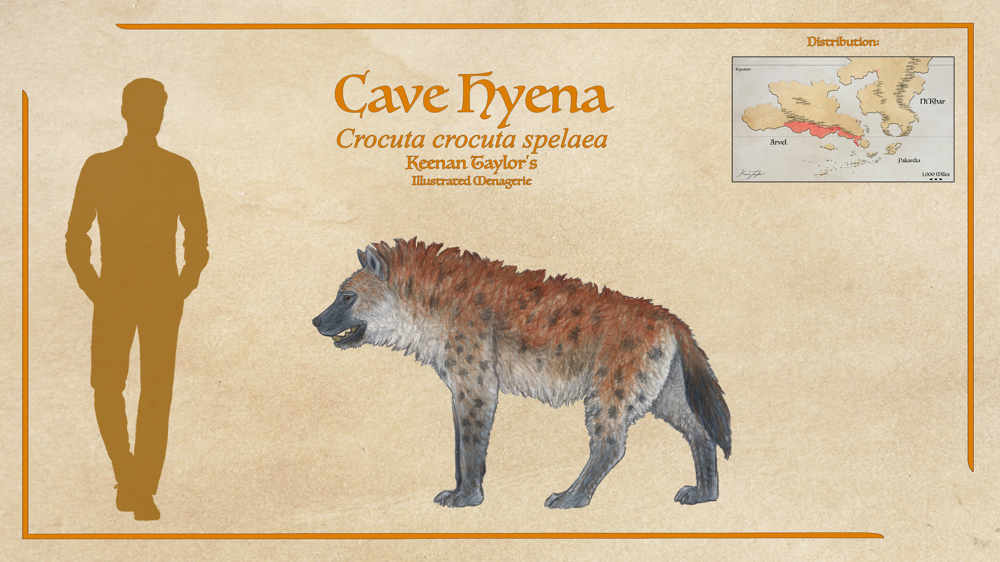
The cave hyena is arguably the most influential mammalian predator of the southern Arvelith Steppes. Descended from spotted hyenas introduced from northeastern Eurasia, it has established itself as one of the most adaptable and socially complex carnivores in the region. Although its anatomy and general behavior remain remarkably similar to those of its Earth relatives, its larger ecological context has produced a predator whose influence extends well beyond its immediate hunting activity. Cave hyenas are highly social animals, living in clans organized around a matriline. These groups may contain several dozen individuals and possess complex relationships between members, with rank influenced by ancestry and social standing. Although they frequently scavenge during daylight, their principal hunting activity occurs after sunset. The transition from daylight to darkness consequently produces a significant change in the character of the steppe predator community. Cave lions, Homotherium, and other predominantly diurnal hunters become less active, while hyenas begin to patrol their territories and exploit the movement of herbivores across the open landscape. Their success does not depend upon exceptional speed. Cave hyenas are generally less capable of prolonged pursuit than wolves, cheetahs, or several other predators of the steppes. Instead, they possess considerable endurance over uneven terrain, where their sure-footedness allows them to navigate rocky ground, riverbanks, and broken uplands more effectively than many competing carnivores. Their hunting behavior is flexible, ranging from solitary pursuit to coordinated attacks by small groups. Most individuals hunt independently or in parties of three to five, while larger portions of a clan may assemble when particularly abundant or substantial prey becomes available. The species' flexibility is central to its ecological success. Cave lions tend to favor prey that can be reliably captured and dragged into cover, while the irogo depends more heavily upon coordinated hunting. Cave hyenas are less restricted by these preferences. They can exploit horses, caribou, and other ungulates, but are also capable of scavenging, consuming bone, and processing carcasses that other predators have largely abandoned. Their powerful jaws allow them to extract substantial nutritional value from a kill, meaning that a carcass can remain useful to a hyena clan long after the softer tissues have been consumed. Cave hyenas are not exclusively nocturnal. During the day, individuals commonly patrol their territories, investigate carcasses, and interact with other members of their clan. However, their greatest influence occurs after dark, when their numbers and social organization allow them to become the dominant mammalian predators of many parts of the steppes. Other carnivores frequently avoid their territories at night, particularly where large clans are established. Even cave lions, which can overwhelm individual hyenas, must account for the possibility of several clan members responding to an encounter. The relationship between cave lions and cave hyenas is consequently one of the defining interactions of the Arvelith predator community. A large male lion can overpower an individual hyena with considerable ease, and hyenas are generally reluctant to approach the largest lions during daylight. After sunset, however, the balance becomes less favorable to the cat. Several hyenas can surround and harass a lion, forcing it to abandon a kill or retreat toward cover. The danger becomes especially significant when a lion is exhausted, injured, or attempting to protect offspring. Cave hyena clans are also capable of defending their young cooperatively. Their social structure makes cubs particularly valuable, and the loss of an entire generation can have lasting consequences for a clan. This is important because cave lions sometimes deliberately attack hyena cubs. Such attacks are generally not motivated by hunger. Rather, they are directed toward reducing the future population of a competing predator. Large male lions may take advantage of the absence of adult hyenas, entering a denning area and killing as many young as possible before the adults return. Hyenas respond to these attacks with considerable aggression. A clan may commit several adults to confronting a lion rather than risk losing an entire generation of offspring. Although one cave lion can kill multiple hyenas under favorable circumstances, a coordinated group of three or four adults can quickly overwhelm even a large male. The conflict is therefore a particularly intense form of interspecific competition in which both sides are capable of inflicting severe losses. Cave hyenas also interact with other predators. Their competition with the irogo is especially pronounced because both species use the same open grasslands and hunt many of the same large herbivores. They are less directly threatened by cave leopards, which can avoid them by remaining in trees, or by wolves, which generally stay close to cover. Their greatest advantage is their ability to exploit darkness, a period in which few other large mammalian predators can operate with comparable confidence. Although some Assembly naturalists have proposed assigning cave hyenas their own species designation, the majority continue to classify them as Crocuta crocuta spelaea. Their skeletons remain sufficiently similar to known cave hyena specimens that a separate species designation has not gained widespread acceptance. Their thick seasonal coat is among their most distinctive features. During warmer periods, it becomes relatively sparse, producing an appearance similar to that of modern spotted hyenas. During colder months, a dense undercoat and longer outer coat provide insulation. Brown, grey, and rust-red individuals are common, with the latter coloration particularly conspicuous in some southern populations.
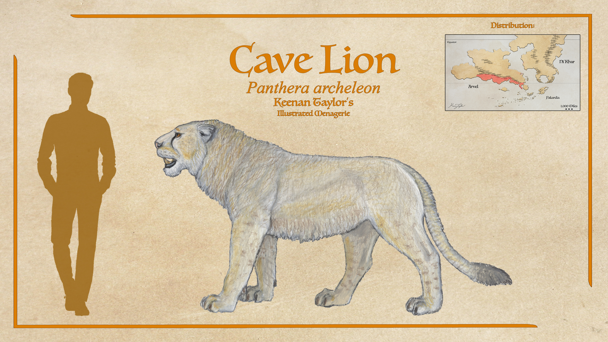
The cave lion is the largest resident mammalian carnivore of the Arvelith Steppes and is conventionally regarded as the region's most formidable officer predator. Unlike the cave lions of Earth, which experienced substantial reductions in body size during the climatic instability of the late Pleistocene, the Kaimeran population has retained its enormous dimensions. The abundance of large prey throughout its range has permitted the species to maintain a body plan considerably larger than that of its ancestral populations. Lionesses commonly weigh approximately 250 kilograms, placing them within the size range of the largest modern lions and tigers. Males are substantially larger, generally ranging between 300 and 400 kilograms, with exceptional individuals exceeding 500 kilograms. These dimensions make the cave lion one of the largest terrestrial mammalian carnivores in Kaimere. Its body is proportionally taller and more long-legged than that of many comparable cats, although this does not necessarily indicate an adaptation toward exceptional sprinting speed. Rather, the longer limbs and efficient stride allow it to cover considerable distances while patrolling extensive territories and searching for prey. The cave lion's height also appears to play a role in social and competitive interactions. A large male can impose its presence at a carcass through sheer stature, making it difficult for smaller predators to approach. In a direct confrontation, very few mammalian carnivores can reliably challenge a large male. Even cave hyenas generally avoid approaching during the day unless a sufficiently large group is present. Despite their great size, cave lions are not especially social. Unlike African lions, they do not form stable prides. Most individuals are solitary, with females maintaining territories and occasionally forming small, loosely organized congregations called sawts. These groups generally consist of two to five related females and their offspring, often sharing a den located near the intersection of their territories. Members usually hunt independently, but the arrangement allows one female to remain behind and protect the young while others forage. The survival advantage of shared protection appears to outweigh the costs of tolerating nearby adult females. Males generally occupy territories that overlap with those of several females but do not regularly live or hunt with them. Occasionally, two or three brothers will remain together and defend a particularly productive area, although these arrangements are uncommon and may not persist once territories become established. A dominant male usually forces subordinate companions to leave unless prey abundance and the availability of females are sufficient to support multiple individuals. The absence of stable prides has also influenced the appearance of males. Cave lions typically possess a ruff rather than the extensive mane characteristic of many modern lions. Some males develop a more substantial mane, but these individuals are uncommon. The ruff may provide some protection during confrontations, although there is insufficient evidence to establish that it is the principal reason for its development. Cave lions generally favor medium-sized prey, particularly caribou and other animals that can be captured and dragged into cover. Horses, toxodonts, rhinoceroses, and mammoths are less frequently targeted, although large males are capable of hunting all of them. These larger animals become more important where hyenas are relatively uncommon or where prey abundance makes the additional risk worthwhile. The preference for smaller game is partly a consequence of competition: a lion that kills a large animal may be unable to move the carcass into cover quickly enough to prevent hyenas from discovering it. The lion's relationship with cave hyenas is one of the principal constraints upon its ecological dominance. Cave lions are larger and often stronger than individual hyenas, but hyenas are considerably more numerous. The lion's ability to dominate a confrontation does not necessarily translate into an ability to monopolize prey or defend its territory throughout the night. A large male may control an area during daylight, only for hyenas to become increasingly influential after sunset. Cave lions also kill other competing predators, including Arvelith wolves, highland bobcats, and cave leopards. These attacks are usually directed toward competitors rather than undertaken for food. The intensity of these interactions is generally lower than that of confrontations with cave hyenas, however, since lions appear particularly motivated to suppress hyena populations. They are also known to kill young zentaur when opportunities arise, although the number of breeding female zentaur using the steppes is small and most of the individuals encountered are males temporarily crossing the mountains. Titan crows occasionally attack lionesses and cubs, and local accounts attribute some juvenile lion mortality to these large predatory tapajarids. Nevertheless, adult lions, especially large males, generally possess the advantage in a direct confrontation. The two species frequently avoid one another, with titan crows more commonly occupying areas where hyena populations are established. The cave lion is therefore the most physically imposing resident mammalian predator of the steppes, but not necessarily the species exerting the greatest influence over the entire carnivore community. Its solitary habits and preference for manageable prey place limits on its ability to dominate the wider landscape. In contrast, the cave hyena's social organization allows it to exert continuous pressure across a greater area and across a wider range of food sources.
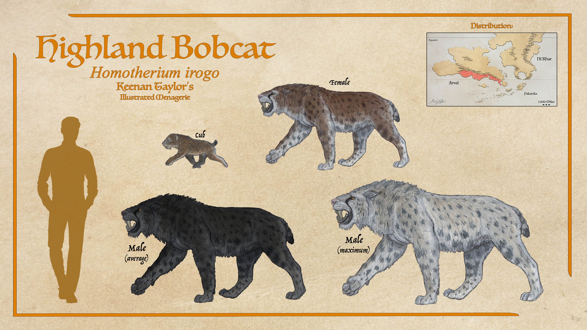
Highland bobcats, referred to regionally as the irogo, is one of the principal daytime predators of the Arvelith Steppes. It occupies an important position between the solitary hunting strategies of cave lions and leopards and the socially organized predation of cave hyenas. Although capable of hunting at night, it is most active during daylight, a pattern that likely reduces direct competition with the nocturnal hyenas. Unlike cave lions, the irogo is more inclined to hunt cooperatively. Its troops are smaller than the clans of cave hyenas, but individuals participate in coordinated hunts more frequently. This social behavior allows them to pursue prey that might be difficult for a solitary predator to capture, while retaining a degree of flexibility that is not possible for a much larger clan. The species is particularly well suited to the mixture of open grassland and broken woodland found throughout the steppes. Open terrain allows groups to locate prey and coordinate their movements, while patches of trees and other cover provide opportunities for concealment and a place to retreat after a successful hunt. Their hunting strategy is consequently less dependent on the extensive continuous cover favored by cave leopards, but they remain associated with areas where shelter is readily available. The presence of cave lions and hyenas creates a particular challenge for the irogo. Both species frequently investigate carcasses during daylight, meaning that a successful hunt does not guarantee that a group can retain its food. Rather than remain at a kill and risk confrontation, highland bobcats commonly divide their prey into portions and withdraw to a defensible den. This behavior limits the amount of time available to larger competitors and allows the group to consume its food in relative security. The division between daytime the irogo and nocturnal cave hyenas is one of the most important examples of temporal niche partitioning among the larger mammalian predators of the steppes. Although they overlap in prey selection and habitat, their preferred activity periods reduce the frequency of direct competition. Neither species is restricted to a single period, but the general pattern allows both to exploit the same landscape without engaging in continuous conflict. Cave lions also compete with the irogo, particularly around prey concentrations and denning areas. Their greater individual size makes direct confrontations unfavorable for the highland bobcat, and lions have been observed killing them. Nevertheless, the smaller groups of Homotherium retain an important ecological position because their coordinated hunting and ability to retreat with carcasses make them less dependent upon holding an exposed kill.

The great grey cheetah, or Timugai cheetah, is the largest member of Felinae known from either Earth or Kaimere. Large males may weigh as much as 250 kilograms, making them considerably more robust than other cheetahs. Although they stand at approximately the same height as the great white cheetah, their heavier build gives them a much greater overall mass. They are particularly prominent in western Arvel, where they occupy deserts, badlands, monsoon forests, and the western reaches of the Arvelith Steppes. The species is most common in the arid landscapes west of the central mountains, but its distribution appears to be broader than older surveys suggested. Its coloration and silhouette can be mistaken for those of cave lions or unusually robust highland bobcat, and many unconfirmed reports from the eastern steppe may represent great grey cheetahs rather than other large cats. Their preference for nocturnal activity further complicates their observation. Great grey cheetahs are specialized pursuit predators. Their long limbs and comparatively efficient stride allow them to run down the abundant camelids and other cursorial herbivores of western Arvel. They are not as fast as the smaller and more gracile cheetahs, nor do they possess the same level of endurance, but they remain the fastest large predator in their region. Their forelimbs are more flexible and muscular than those of smaller cheetahs, providing greater grappling ability at the expense of some maximum speed. Their skulls and teeth are also unusually robust, and their enlarged dewclaws are among the most developed in the genus. The dewclaw is often held forward rather than pointing backward, an adaptation that assists in securing larger prey and contributes to the specific name megalonyx. The great grey cheetah is generally solitary, although males form coalitions near oases, springs, and other reliable water sources. These locations also attract large concentrations of prey, making them advantageous hunting territories. During periods when large herbivores are abundant, particularly toward the end of the dry season, coalitions may become larger and may occasionally include females. The species has been recorded taking camels, horses, elasmarians, and smaller game, while larger coalitions can pursue giant camels, substantial runnendrakes, juvenile titanosaurs, and even young chalicotheres. Its relationship with the other predators of the southern steppes is less favorable than that of its western populations. Great grey cheetahs prefer to hunt at night, a pattern that is advantageous in the west where it allows them to avoid the diurnal silver cockatrices. In the southern Arvelith Steppes, however, darkness belongs largely to the cave hyenas. Their clans dominate much of the nocturnal landscape, while cave lions and and highland bobcat create additional competition for kills. Although great grey cheetahs are fast enough to escape these competitors, they are considerably larger than their more gracile relatives and require more food to sustain themselves. A brief meal taken immediately after a kill may not be sufficient, and the need to defend or return to a carcass makes them vulnerable to competition. They can hunt during daylight, but doing so exposes them to cave lions and other predators that may appropriate their kills. Their ability to flee is substantial, and they are unlikely to be caught by either lions or hyenas in a direct pursuit. Nevertheless, fleeing with only a small portion of a carcass is not always energetically sustainable for such a large animal. This is probably a major reason for their comparative scarcity east of the Arvelith mountain ranges. Within the Arvelith Steppes, the great grey cheetah is therefore best regarded as an uncommon, regionally important officer predator rather than a dominant resident of the southern grasslands. In the western deserts and badlands, however, it can occupy a position closer to that of a local apex predator, particularly where larger competitors are rare.
The Arvelith wolf is the heavier southern representative of the Kaimeran jackal lineage. Adults typically weigh between 15 and 30 kilograms. It is more robust than the common jackal, with a deeper chest, thicker neck, broader muzzle, and greater jaw musculature. Its build reflects a more flexible feeding strategy than that of a strict small-game predator. Although it readily hunts small and medium-sized animals, its diet is relatively omnivorous and can include fruit, berries, and other seasonal plant material, especially among island populations. The skull has a broader molar region, while the heavier forequarters improve its ability to grapple and dismember prey. Its legs remain adapted for efficient travel rather than specialized high-speed pursuit. Wolves generally hunt during the day, when they can avoid the greater activity of cave hyena clans. They favor areas where open grassland meets woodland or other forms of cover, using the broken terrain to approach prey and escape larger competitors. Their position is therefore somewhat subordinate to that of the cave lion and highland bobcats, but they remain successful predators throughout the steppe mosaic. The Arvelith wolf is not a dominant hunter of the largest ungulates. Instead, it exploits smaller mammals, young or vulnerable herbivores, carrion, and other available resources. It may compete with cave leopards and smaller mustelids, although differences in activity and habitat reduce some direct competition. Cave lions occasionally kill wolves, but such encounters are generally less intense than their conflicts with cave hyenas.
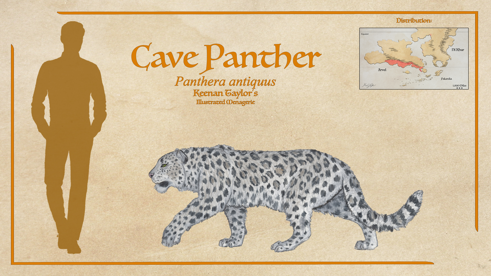
The cave leopard or cave panther, is another important woodland-associated predator. It is generally considered a descendant of the Eurasian cave leopard, although its ancestry may also include genetic contributions from other Panthera lineages introduced to Kaimere. Genetic studies indicate that it retains some tiger-line ancestry, and many naturalists consider it sufficiently distinct to warrant recognition as its own species. Cave leopards are particularly successful in southern Arvel, although they have not penetrated the northern continent to the same extent as Arvelith lions. Males may reach approximately 150 kilograms, while most weigh between 80 and 100 kilograms. Females are considerably smaller, commonly weighing 40–50 kilograms, making this one of the most sexually dimorphic large cats in Kaimere. Their principal advantage is their ability to exploit the wooded portions of the steppe mosaic. They are capable climbers and frequently cache kills in trees, reducing the likelihood of losing food to cave hyenas or Homotherium. These two competitors are much less effective in trees, allowing cave leopards to retain carcasses with greater security than many other mammalian predators. Even large males may continue to cache prey in this manner, demonstrating the importance of arboreal refuges in a habitat where large terrestrial carnivores are numerous.
The uku bear is a close relative of the Asiatic black bear introduced from Southeast Asia, it is a generalist omnivore that feeds on almost anything other than grasses and ferns. It is a proficient climber, with stronger curved claws than its Earth relatives. Even large males can climb high enough to escape some terrestrial predators, including cockatrices and young megaraptorans. It occurs throughout both continents and on many islands, including the Arvelith Highlands and areas near human settlements. Its adaptability makes it one of the most widespread bears in Kaimere, although its willingness to forage near people has led to frequent dangerous encounters and occasional man-eating behavior.
Vassals of the Steppes
Vassal predators occupy a position above the familiar large mammalian carnivores but below the great apex predators that dominate the largest terrestrial ecosystems of Kaimere. The category generally encompasses animals substantially larger than the largest modern terrestrial predators of Earth, commonly falling between approximately 1,000 pounds and two tons. They are capable of killing large herbivores and can threaten the officers beneath them, but they generally remain subordinate to the largest megaraptorans and other robust predators.
In the Arvelith Steppes, the most iconic vassal predators are not abundant permanent residents. The most important are the titan crows, which appear seasonally and exert considerable pressure on the smaller predator community. The occasional arrival of larger megaraptorans also creates vassal- or apex-level predatory pressure, although such animals are not established as a resident component of the southern steppe ecosystem.
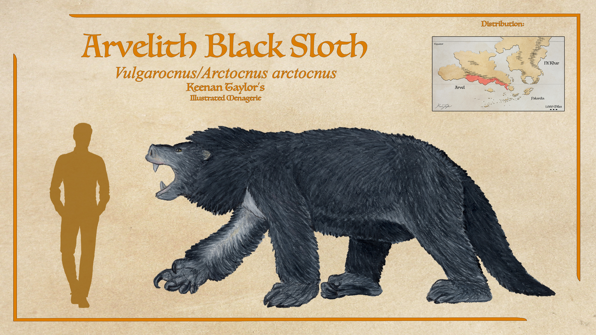
The Arvelith black bear sloth is a large mylodont that competes with the uku bear and the cave bear for food and habitat. It possesses thick hide and osteoderms that protect its back and hips, while its claws and tusks make frontal attacks dangerous. Although generally slow-moving, it can gallop at approximately 25 miles per hour over short distances and may use this ability to chase away predators or competitors. Its diet varies considerably by region and season. In the southern Arvelith landscape it consumes foliage, berries, and other plant material, but it can become substantially more carnivorous when conditions are poor. During the dry season, prairie populations may subsist heavily on carrion and slow-moving armored prey, while individuals in other regions consume fish, grass, or leaves. Sows are much smaller than boars, and some females climb trees to sleep, while the largest males are generally too heavy to do so. It is the largest living representative of its clade and is predominantly herbivorous, although it may hunt smaller carnivores during winter and frequently drives other animals away from carcasses. It is particularly dangerous around settlements, where individuals may break into food stores and attack people. Its meat is considered highly variable in quality, depending on season and diet. Animals feeding primarily on grasses and berries during the wet season are considered suitable game, while those that have spent a long dry season scavenging or consuming animal matter are generally less desirable.
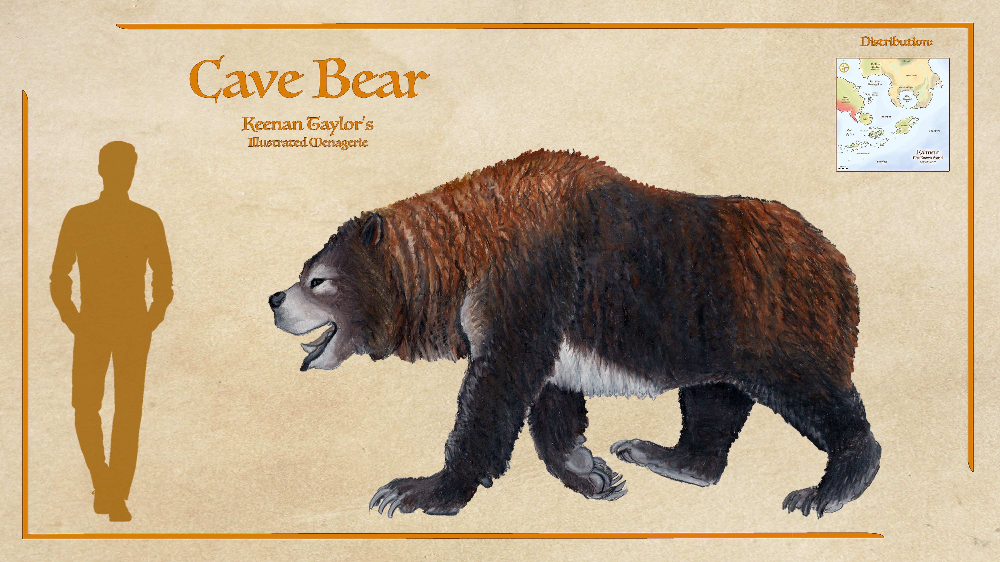
The cave bear is the largest bear of Kaimere and is restricted primarily to alpine forests and wooded valleys in the southern Arvelith Highlands. Despite its name, it is not particularly adapted to caves; these are simply among the places in which it may winter or shelter. It is overwhelmingly herbivorous, although it occasionally hunts slow prey and readily drives smaller carnivores away from carcasses. Its short, powerful legs are poorly suited to prolonged pursuit, but its sense of smell is highly developed and allows it to locate carrion over considerable distances. Cave bears are relatively rare, and their limited modern distribution may reflect competition with the black bear sloth. Both occupy similar ecological spaces, but the sloth appears to have established itself more successfully. The uku bear has also become increasingly common in the highlands, perhaps because it exploits resources and habitats that are less accessible to the much larger black sloth and cave bear. The resulting relationships illustrate how an ecosystem's omnivores can influence predator populations even when they are not major carnivores themselves.
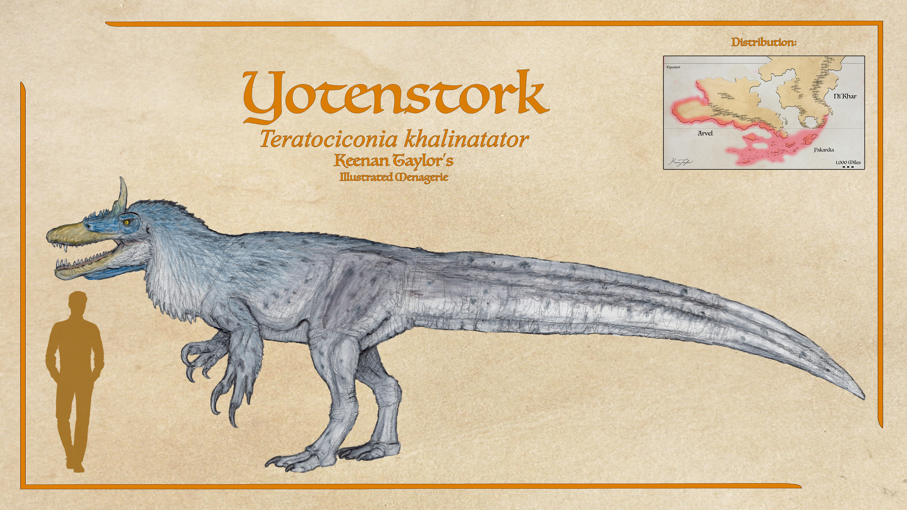
The yotenstork is another important predator associated with the waterways of southern Arvel. A megaraptoran measuring approximately 7.5–8 metres in length, it is a southern relative of the alar. Although it occasionally pursues large terrestrial prey, it is principally a fish-eater, exploiting rivers, lakes, lowland swamps, and coastal waters. It occupies the coastlines of southern Arvel and travels inland along major waterways. Its population appears consistent with those found on several Khalin islands, although its abundance in the region's lowland aquatic environments is particularly notable. The yotenstork does not form a major component of the open-steppe predator community. Its significance lies instead in the river networks that sustain the grasslands. These waterways support their own predator assemblages, exploiting fish and aquatic prey while occasionally intersecting with terrestrial herbivores and carnivores at river crossings and wetlands. The species is therefore best understood as a large riparian predator whose range overlaps the southern steppe system without being dependent upon its grassland environment.
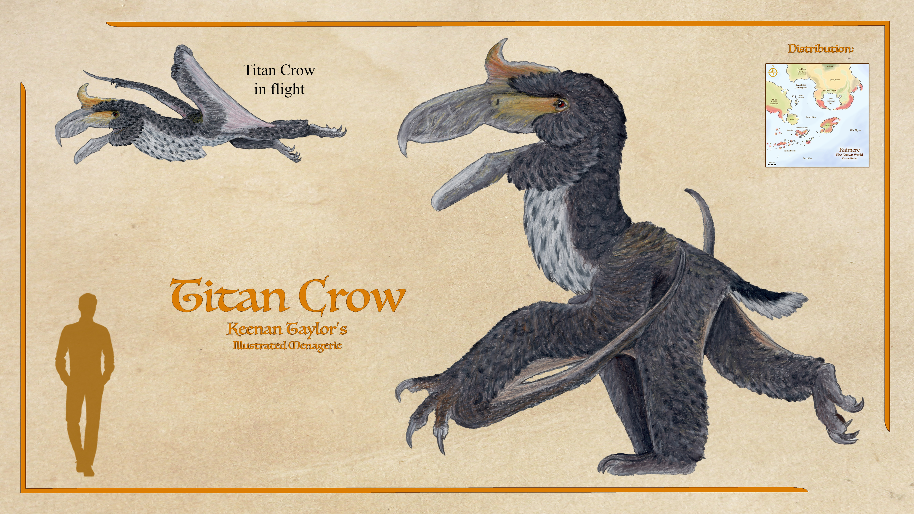
Titan crows are large predatory tapajarids that constitute one of the most important seasonal vassal predators of the Arvelith Steppes. Their ecological influence is particularly noticeable around areas with high concentrations of cave hyenas and other large mammalian carnivores. Unlike the resident mammalian officers, they do not appear to maintain the same continuous presence throughout the steppe system. Their movements are more seasonal, and their distribution can overlap with the ranges of large terrestrial predators during periods when prey availability is favorable. Titan crows are known to prey upon lion cubs and occasionally adult lionesses. These attacks are not without risk, especially when the birds encounter large male lions, which possess sufficient strength to repel them. They generally avoid direct confrontations with the largest cave lions, and their presence is more commonly associated with areas where hyenas are abundant. The relationship between titan crows and hyenas is therefore not simply one of competition. Both may exploit the same concentrations of prey and carrion, although their methods of feeding and hunting differ. Their seasonal presence adds an additional level of predation to an ecosystem that otherwise lacks a resident theropod apex predator. Mammalian carnivores that dominate the grasslands are periodically confronted by a predator that is substantially larger than most of them and capable of killing animals that are normally considered dangerous. This pressure may influence the distribution of lioness dens and the behavior of other smaller predators, particularly in areas where titan crows are known to congregate. The titan crow's role is especially important because the southern Arvelith Steppes are not normally governed by a resident megaraptoran. In the absence of such a predator, cave lions, hyenas, and highland bobcats form the principal large-carnivore community. Seasonal titan crow activity temporarily disrupts this arrangement, demonstrating that the absence of a permanent theropod apex predator does not mean that the steppes are entirely free of large avian predators.
Apex Predators of the Steppes
Apex predators occupy the highest position within a regional carnivore community. They are not necessarily the largest animals in every environment, nor must they be the most abundant or successful hunters on an individual basis. Their defining characteristic is the absence of a regular predator capable of consistently killing them. In Kaimere, this position is frequently occupied by enormous megaraptorans, whose size and respiratory efficiency allow them to prey upon both the largest herbivores and other large carnivores.
The Arvelith Steppes are unusual because they lack a permanent resident theropod apex predator. Their principal large carnivores are mammals, and the cave lion and cave hyena occupy the dominant positions within the resident mammalian community. In many ecological surveys, the cave lion is described as the king of the steppes because of its extraordinary size and its dominance in direct encounters. In practice, however, it shares the uppermost resident predator tier with cave hyenas, whose social organization and nocturnal activity allow them to control much of the landscape when the lions are least active.
The cave lion and cave hyena together form the principal upper tier of the resident mammalian predator community. Their relationship illustrates why apex status cannot be determined solely by comparing body mass or physical strength. Cave lions are larger and more formidable individually, but cave hyenas are more numerous and possess a social structure that allows them to maintain continuous pressure over a greater area. During daylight, the cave lion is generally the most imposing predator of the steppe. Large males can displace smaller carnivores from carcasses, defend territories, and kill competing predators. Their size gives them a substantial advantage in direct physical confrontations, and most hyenas avoid challenging a large male in open daylight unless they possess a considerable numerical advantage. At night, however, the distribution of power changes. Cave hyena clans become active across their territories, using their numbers and coordinated behavior to exploit prey, investigate carcasses, and confront rival predators. Individual lions may continue hunting, but they are increasingly vulnerable to harassment and competition from the hyenas. A lion that cannot secure its carcass may be forced to abandon it, regardless of how effectively it captured the prey. The two species therefore dominate different aspects of the same ecosystem. The cave lion represents the greatest individual predatory force among the resident mammals, whereas the cave hyena represents the most influential social hunting organization. Neither can be understood independently of the other. The abundance of prey allows both to coexist, while their different hunting schedules and social strategies reduce direct competition enough for them to persist within the same landscape. This relationship also has consequences for smaller predators. Highland bobcats, wolves, and cave leopards must all account for the presence of hyenas and lions when selecting hunting grounds, feeding sites, and denning locations. A carcass taken by one predator may quickly become a resource for another, and the ability to consume food rapidly or retreat to cover is often more important than the ability to kill large prey.
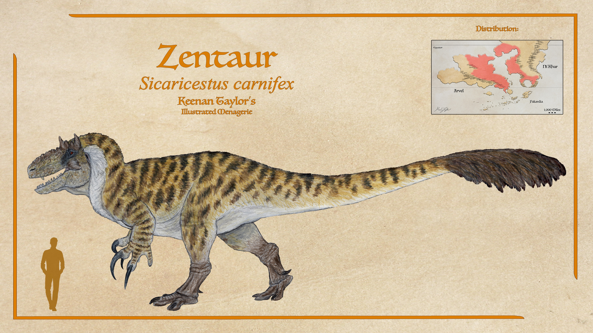
The zentaur is the most formidable predator to enter the Arvelith Steppes, although its presence is seasonal rather than continuous. It is a robust megaraptoran and the dominant terrestrial predator of the forests of Arvel and Ni’Khar. Its range includes the forests of the eastern Arvelith Highlands, where its ability to conceal its enormous body among dense vegetation allows it to hunt large game with remarkable efficiency. Adult zentaurs commonly measure between 10 and 14 metres in length and weigh approximately 6–11 tons. Exceptional individuals may reach 15 metres and 15 tons, although these represent the upper extreme of the species' considerable size variation. The species is not strongly sexually dimorphic in overall dimensions. Instead, the size of an adult is heavily influenced by the amount of food it obtains during its adolescent growth period, particularly between approximately twelve and seventeen years of age. During this period, individuals may gain a tonne or more in a year, and their nutritional intake helps determine their final skeletal dimensions. Unlike the more cursorial uktan of the Houze Prairie, zentaurs are low-slung, heavily built predators adapted for grappling large prey. Their torso is exceptionally muscular, and their jaws are used primarily to restrain struggling animals rather than deliver the killing bite. Their principal weapons are the enormous claws on their forelimbs, which can exceed two feet in length. Two enlarged caniniform teeth in the upper jaw help secure a grip, while the forelimbs and claws are used to restrain and dispatch prey. Once a zentaur has seized its target, it uses its claws to penetrate the throat, chest, and other vulnerable regions. Its highly reduced third manual digit is unusually muscular and precise, allowing the animal to withdraw and reposition its claws with considerable speed. This permits repeated attacks against vital areas and eventually causes prey to succumb to blood loss or internal injury. Unlike a pursuit predator, which relies upon exhausting prey, the zentaur is adapted to overcoming large animals through direct physical restraint. Although the Arvelith Steppes lack a permanent native theropod apex predator, their proximity to the Arvelith Highlands makes them periodically accessible to large megaraptorans. Male zentaurs are particularly notable in this respect. Outside the breeding season, they may cross the mountains to exploit the abundant mammoth populations and other large herbivores of the southern grasslands. These visits are not equivalent to the establishment of a resident zentaur population. The uneven terrain and colder conditions of the highlands are more favorable to the species' preferred habitats, and most breeding females maintain territories in more suitable environments. The steppes are therefore best understood as an important seasonal feeding ground rather than a permanent center of zentaur activity. The seasonal movement of a zentaur can nevertheless have profound consequences for the local carnivore community. An adult individual is capable of killing even the largest cave lion, and its exceptional endurance means that large mammalian predators cannot reliably escape through prolonged pursuit. Lions generally respond by retreating toward cover, where a large megaraptoran is less likely to pursue them. Young zentaurs may also be vulnerable to large lions, but the number of breeding females using the steppes is small, and adult or subadult males are the more frequently encountered animals. The relationship between zentaurs and the mammoth herds is particularly interesting. Mammoths possess extraordinarily sensitive olfaction and a sophisticated infrasonic communication network that allows warnings of approaching predators to travel over great distances. On the open highlands, the wind often carries the scent of an approaching zentaur across the landscape, allowing mammoths to detect it long before it reaches the herd. They may seek higher ground, which zentaurs are reluctant to enter, or leave a river valley in which the predator has established itself. Zentaurs benefit from concealment and the ability to mask their scent, making forests and wooded valleys much more suitable for ambush than exposed grasslands. If an individual remains in a river valley for a prolonged period, its scent may eventually become familiar to the local herbivores. Mammoths may then avoid the area, leaving the predator with smaller prey such as moose and other mammals that are insufficient to sustain it indefinitely. The result is that a zentaur may remain in the steppes only while prey availability and hunting conditions remain favorable. The southern Arvelith landscape thus experiences occasional incursions by predators that would otherwise be its dominant terrestrial hunters. These visits do not fundamentally alter the resident predator hierarchy, but they introduce a formidable source of mortality for the largest herbivores and create temporary pressure on the mammalian carnivores that normally dominate the region.